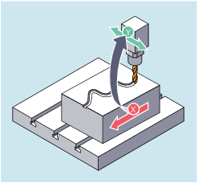

With the axial master value coupling, a leading and a following axis are moved in synchronism. It is possible to assign the position of the following axis via a curve table or the resulting polynomial uniquely to a position of the leading axis – simulated if necessary.
The leading axis is the axis which supplies the input values for the curve table. The following axis is the axis, which takes the positions calculated by means of the curve table.
The following can be used as the master value, i.e. as the output values for position calculation of the following axis:
Actual values of the leading axis position: Actual value coupling
Setpoints of the leading axis position: Setpoint value coupling
The master value coupling always applies in the basic coordinate system.
For information on the creation of curve tables, see Section "Curve tables".
Or deactivation without specifying the leading axis:
LEADOF(<FAx>)The master value coupling can be activated/deactivated both from the part program and also during motion from synchronized actions.
| Activate master value coupling |
| Deactivate master value coupling |
| Following axis |
| Leading axis |
| Curve table number |
| Switching between setpoint and actual value coupling |
When you deactivate the master value coupling, the following axis becomes a normal command axis again!
Depending on the setting in the machine data, the master value couplings are deactivated with RESET.
In a pressing plant, an ordinary mechanical coupling between a leading axis (punch camshaft) and axes of a transfer system comprising transfer axes and auxiliary axes is to be replaced by an electronic coupling system.
It demonstrates how a mechanical transfer system is replaced by an electronic transfer system. The coupling and decoupling processes are implemented as static synchronized actions.
From the leading axis LV (punch camshaft), transfer axes and auxiliary axes are controlled as following axes that are defined via curve tables.
X feed or longitudinal axis
YL closing or transverse axis
ZL lifting axis
U roll feeding, auxiliary axis
V guide head, auxiliary axis
W greasing, auxiliary axis
The actions that occur include, for example, the following synchronized actions:
Coupling: LEADON(<FAx>,<LAx>,<CurveTabNr>)
Decoupling: LEADOF(<FAx>,<LAx>)
Preset actual value: PRESETON(<Ax>,<Value>)
Set marker: $AC_MARKER[i]=<Value>
Coupling type: real/virtual master value
Approach axis positions: POS[<Ax>]=<Value>
Conditions
Fast digital inputs, real-time variables $AC_MARKER and position comparisons are linked using the Boolean operator AND for evaluation as conditions.
| Note |
In the following example, line change, indentation and bold type are used for the sole purpose of improving readability of the program. For the control, everything that follows a line number constitutes a single line. |
| Program code | Comment |
|---|---|
| ; Defines all static synchronized actions. | |
| ; ****Reset marker | |
| N2 $AC_MARKER[0]=0 $AC_MARKER[1]=0 $AC_MARKER[2]=0 $AC_MARKER[3]=0 $AC_MARKER[4]=0 $AC_MARKER[5]=0 $AC_MARKER[6]=0 $AC_MARKER[7]=0 | |
| ; **** E1 0=>1 transfer ON | |
| N10 IDS=1 EVERY ($A_IN[1]==1) AND ($A_IN[16]==1) AND ($AC_MARKER[0]==0) DO LEADON(X,LW,1) LEADON(YL,LW,2) LEADON(ZL,LW,3) $AC_MARKER[0]=1 | |
| ;**** E1 0=>1 coupling roll feeding ON | |
| N20 IDS=11 EVERY ($A_IN[1]==1) AND ($A_IN[5]==0) AND ($AC_MARKER[5]==0) DO LEADON(U,LW,4) PRESETON(U,0) $AC_MARKER[5]=1 | |
| ; **** E1 0->1 coupling alignment head ON | |
| N21 IDS=12 EVERY ($A_IN[1]==1) AND ($A_IN[5]==0) AND ($AC_MARKER[6]==0) DO LEADON(V,LW,4) PRESETON(V,0) $AC_MARKER[6]=1 | |
| ; **** E1 0->1 lubrication coupling ON | |
| N22 IDS=13 EVERY ($A_IN[1]==1) AND ($A_IN[5]==0) AND ($AC_MARKER[7]==0) DO LEADON(W,LW,4) PRESETON(W,0) $AC_MARKER[7]=1 | |
| ; **** E2 0=>1 coupling OFF | |
| N30 IDS=3 EVERY ($A_IN[2]==1) DO LEADOF(X,LW) LEADOF(YL,LW) LEADOF(ZL,LW) LEADOF(U,LW) LEADOF(V,LW) LEADOF(W,LW) $AC_MARKER[0]=0 $AC_MARKER[1]=0 $AC_MARKER[3]=0 $AC_MARKER[4]=0 $AC_MARKER[5]=0 $AC_MARKER[6]=0 $AC_MARKER[7]=0 | |
| .... | |
| N110 G04 F01 | |
| N120 M30 | |
See also:
Axial leading value coupling LEADON/LEADOF Further Information